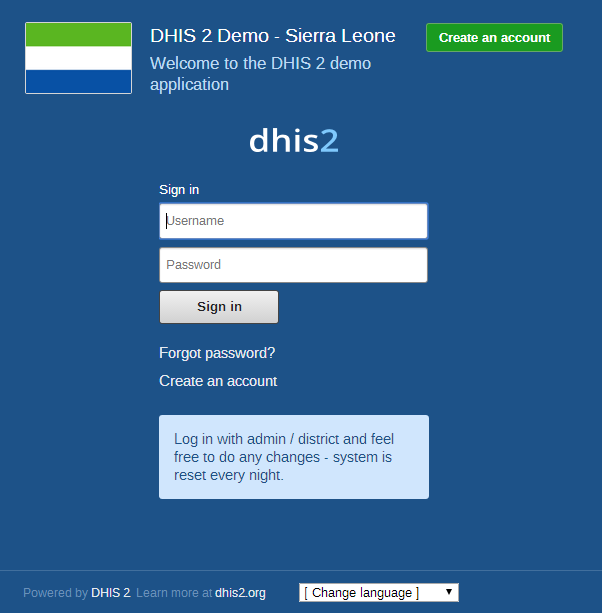

Regardless of whether you have installed the server version of the desktop Live version, you will use a web-browser to log on to the application. DHIS2 should be compatible with most modern web-browsers, although you will need to ensure that Java Script is enabled.
To log on to the application just enter http://localhost:8080/dhis if you are using the DHIS2 live package, or replace localhost with the name or IP address of the server where the server version is installed.
Once you have started DHIS2, either on-line or off-line, the displayed screen will prompt you to enter your registered username and password. After entering the required information click on log-in button to log into the application. The default user name and password are 'admin' and 'district'. They should be changed immediately upon logging on the first time.
|  |
You can select the language which you wish to display DHIS2 in from the "Change language" dialog box at the bottom of the screen. Not all languages may be available.
Should you have forgotten your password, you can click on the "Forgot password?" link. You must have informed DHIS2 of your email address and the server must be properly configured to send emails.
If you want to create your own account (and the server administrator allows this), simply click "Create an account" and follow the directions provided.
Once you have logged into DHIS2, refer to the specific sections in this manual for the different functionality which is available.